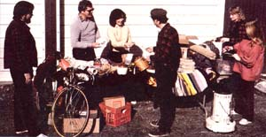

Here's a business requiring little investment and less overhead! Mike Abrams
A little over a year ago, my wife and I opened a one-day-a-week secondhand store ... and ever since then we've been having a ball, recycling other folks' rummage into our bill-paying money! And you can do the same, with no more than just a bit of spare time ... a modicum of junking know-how (I'd done a little yard-sale "dealing" in college) ... a hearty enjoyment of people ... and a strong desire to work for yourself
Lorraine and I got involved in this business as a result of visiting someone else's backyard flea market. It was at the end of the day, and we were among the last customers to leave. I happened to notice that the poor fellow holding the sale still had a lot of unsold merchandise, and thought what a shame it'd be for him to have to box up all that potentially profitable junk and cart it up to an attic corner (or, worse yet, to the dump). So, mustering up all the good horse-trading sense that my granddaddy'd taught me, I said I'd take all that" trash" off his hands for $5.00. Apparently no stranger to the art of haggling himself, the man said I could have it for $10.00. Well, I was amazed that he even considered my low offer ... but I didn't let my surprise get in the way of my haggling, and wound up paying him $8.00 for the entire lot.
At any rate, before we knew it, my wife and I had our pickup loaded with several hundred pounds of marketable goodies! The next question was what to do with the loot. Our house was, we felt, located too far out of town to attract enough yard-sale customers.
Finally-after careful deliberation-we came up with the plan to rent a warehouse cubicle in town and hold our sale there. (That way we'd have the benefit of a centrally located retail store without the usual high overhead.) So we scouted around and found a dry, clean, lighted (if we supplied the bulb) 5' X 15' space for only $20 a month. And once we checked with the management to make sure we could market as well as house our goods on the premises (some places where we inquired objected to the idea), we unloaded and began to set up shop.
Since we'd already invested the rental money, we decided to get cracking and hold our first sale the very next weekend. So, after securing our merchandise with a $3.00 padlock, we traipsed off to the local newspaper office and took out a classified ad to let folks know about our "shop warming". And remembering what a good deal we'd made with our first "middleman", we took out a second ad that read, "We buy yardsale leftovers," and gave our phone number. At 10 cents a word, the total cost of our advertising was a mere $2.00.
Over the course of the following week, we spent several hours sorting, cleaning, fixing up, and pricing our junk. Then, early on the morning of our sale, we drove to welltraveled intersections near our warehouse and put up hand-lettered signs (with arrows and directions) so no one could miss us! This done, we went back and arranged our merchandise-outside-on folding tables that we'd borrowed from friends.
All our preparation paid off, too ... because from the moment we opened up till well past 2:00 p.m., we had a steady flow of bargain hunters. Finally (once the rush had slowed to an occasional latecomer), we packed the leftovers back into the warehouse and counted our money. There was plenty to count, too ... all in all we took in about $80, which left us with a profit of $47! Our sale was a success.
Furthermore, when we got home, the phone was practically ringing off the hook with calls from people eager to get rid of their yard-sale rejects! We ended up spending another $50 on "new" merchandise ... but that was fine with us, because our "storefront" rent was paid up for three more weeks!
That first sale took place over a year ago ... and my hardworking spouse and I have been happily dealing junk ever since! We still spend only one or two days a week working at our enterprise, buteven soour reputation and profits (we currently net over $200 a month) have grown, and we now have an established clientele ... a professionally printed sign and business cards ... and plans to transfer our shop to a more permanent location: the shed behind our home. (Now that we have regular customers who say they wouldn't mind the long drive, that move could increase our net by making monthly warehouse fees unnecessary.)
To save any folks who'd like to follow our example a few headaches (and, perhaps, heartaches as well), here are some lessons we learned the hard way.
[11 Leave your phone number with the proprietor of any yard sale you think you might later want to buy out ... and make a quick list (including prices) of the items on
display. Then, if the seller does call, you'll have an idea of how much his/her remaining goods are worth. (Also, be sure to say when you'll be home to receive the phone call ... and then be there!)
[2] While making your junking rounds, never pass up a good buy in the morning, hoping that you'll be able to purchase it for less later in the day ... because chances are that by afternoon it'll be gone! We lost a lovely oak rocker this way ... whereas quick action once allowed us to snap up a 5,000-BTU air conditioner for a mere $15, an appliance that we later sold for $125!
[31 The price you pay for an article and what you turn around and charge for it are up to you. Just think of the people from whom you buy as wholesalers, and your business as a retail establishment ... and then buy and mark up accordingly.
[4] You'll get a good idea of what sort of merchandise sells and what doesn't (and of what prices are appropriate) if you attend as many flea markets and garage sales as your time allows.
[5] When you get ready to peddle your used wares, it's a good idea to price everything (with tags) before your sale starts. Later-during the confusion of dealing with customers-you might forget how much you'd decided something was worth ... and that memory lapse could cost you money!
[6] Make your business a cash-and-carry operation. Checks can be a real nuisance ... especially if they bounce! (We have a sign that says, "Barter Welcome, Cash Accepted, Checks ... NO WAY!")
[71 And finally, to avoid possible IRS hassles, get in the habit of writing out a receipt, and keeping the carbon copy, for each item you sell ... no matter how small and insignificant it may seem.
There's more I could tell you ... but none of it can compare with what you'll pick up when you start a home junk trade and discover your own reasons for turning one person's trash into another's treasure!
|
 |
|
|